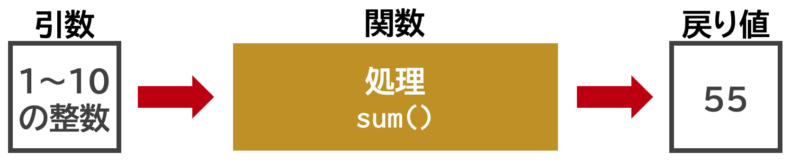

help(mean)6 関数
6.1 Rの関数
Rには、様々な関数が用意されています。 関数とその使い方は覚えるしかありません。 ここでは、よく使う関数を紹介しつつ、Rの基本的な使い方を学んでいきます。
6.2 関数と引数と戻り値
関数(function)は、引数(ひきすう, argument)を与えると、何らかの処理を行い、結果を返してくれます。 返ってくる結果を戻り値(return value)と呼びます。
用語
- 関数
- 引数
- 戻り値

この資料では、関数をmean()のように、紫色のモノフォントで関数名と丸括弧で表しています。
プログラミングの関数は数学の関数と同じで、xを引数とする関数f(x)がf(x) = a + bxという関数系を持っているとすると、引数xに値を代入するとb倍してaを加えた値が返ってくる、という処理を行います。
関数がどのような引数を受けるのかは、関数のヘルプを参照するのが一番確実です。 ヘルプは、help(関数名)で表示できます。 たとえば、ベクトルの算術平均を返す関数mean()のヘルプをみてみましょう。
help()はヘルプを表示する関数です。?関数名でも同じ結果が得られます。
すると、以下のようなヘルプが表示されます。
Arithmetic Mean
Description
Generic function for the (trimmed) arithmetic mean.
Usage
mean(x, ...)
Default S3 method:
mean(x, trim = 0, na.rm = FALSE, ...)
Arguments
x An R object. Currently there are methods for numeric/logical vectors and date, date-time and time interval objects. Complex vectors are allowed for trim = 0, only.
trim the fraction (0 to 0.5) of observations to be trimmed from each end of x before the mean is computed. Values of trim outside that range are taken as the nearest endpoint.
na.rm a logical evaluating to TRUE or FALSE indicating whether NA values should be stripped before the computation proceeds.
... further arguments passed to or from other methods.
この関数は(トリムされた)算術平均(arithmetic mean)を返す関数であることがわかります。 使い方は、mean(x)と書きます。 引数には順に、
-
x: 数値などのベクトル -
trim: トリムする割合(0から0.5の間) -
na.rm: NAを除外するかどうか
の3つがあり、 デフォルトでは、trim = 0、na.rm = FALSEとなっています。
6.3 引数の順番
関数に引数を与えるときは、引数の順番に注意する必要があります。mean()の場合は上の順番がデフォルトです。
例として、1から9と100の整数ベクトルの合計と算術平均を求めてみましょう。データのサイズは10です。
単純に平均を求めるだけならこれで十分ですが、データに異常値があると平均がおかしな値になり、またデータに欠損値NAがあるとmean()はエラーを返します。 そこで、mean()の引数trimとna.rmを使って、異常値を除外した平均を求めてみましょう。
mean(x, trim = 0.1, na.rm = TRUE)[1] 5.5trim = 0.1は、データの上位と下位の10%を除外することを意味します。ここでは、1と100が除外され、2から9の平均が求められています。 na.rm = TRUEは、NAを除外することを意味します。
引数の並びを変更しない場合は、引数名を省略して引数を与えることができます。
mean(x, 0.1, TRUE) # 上と同じ結果[1] 5.5引数を省略せずに与える場合は、引数の順番を変更することが可能です。 たとえば、mean(x, trim=0.1, na.rm=TRUE)とmean(x, na.rm=TRUE, trim=0.1)は同じ結果を返します。
やってみましょう。
mean(na.rm = TRUE, trim = 0.1, x)[1] 5.5しかし、引数の表記を省略する場合は、引数のデフォルトの順番どおりに書く必要があります。次のように書くとエラーになります。
mean(x, TRUE, 0.1) # エラーとにかく、ヘルプを読んで関数の使い方を確認することが大切です。
6.4 自作関数を作る
プログラミングの重要な役割の1つが関数を作ることです。 行いたい処理や計算が、既存の関数では実現できない場合、自分で関数を作る必要があります。 一度関数を作成しておけば、何度も同じソースコードを書く必要はなくなり、また別のプログラムでも使いまわすことができます。
関数を作るには、function()を使います。 function()の引数には、関数に与える引数を書きます。 たとえば、xとyを引数に取り、xとyの和を返す関数を作るには、以下のように書きます。
add <- function(x, y) {
x + y
}関数を作成するときは、関数の名前を決める必要があります。 関数の名前は、変数の名前と同じように、英数字とピリオド(.)、アンダースコア(_)からなる文字列で、数字で始まることはできません。 関数の名前は、関数を呼び出すときに使います。 たとえば、上の関数をadd()という名前にしたので、add(1, 2)と書くと、1 + 2の結果が返ってきます。
add(1, 2)[1] 32回サイコロを振って出た目の合計を返す関数を作ってみましょう。
[1] 8上記のように、引数を取らない関数も作ることができます。 引数を取らない関数を作るときは、引数の丸括弧を省略することができます。
6.5 初期値を設定する
関数を作成するときは、引数の初期値を設定することができます。初期値を設定しておけば、引数を省略して関数を呼び出すことができます。
たとえば、xとyの和を返す関数を作成するとき、yの初期値を0に設定しておけば、xだけを与えて関数を呼び出すことができます。
add <- function(x, y = 3) {
x + y
}
add(1) # 1 + 3[1] 4